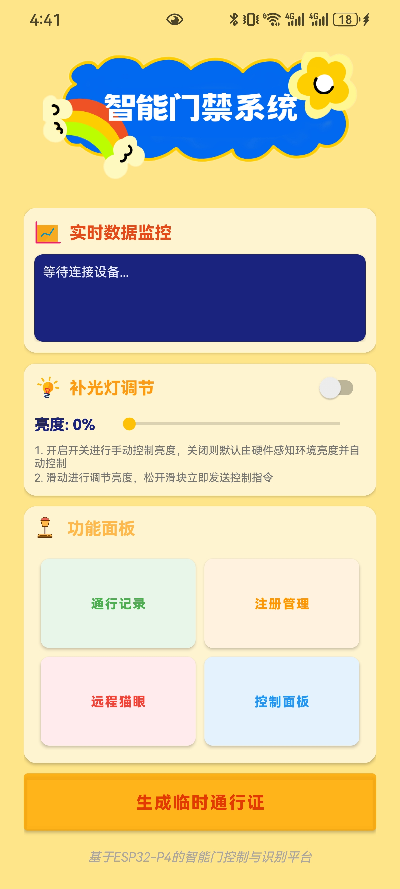
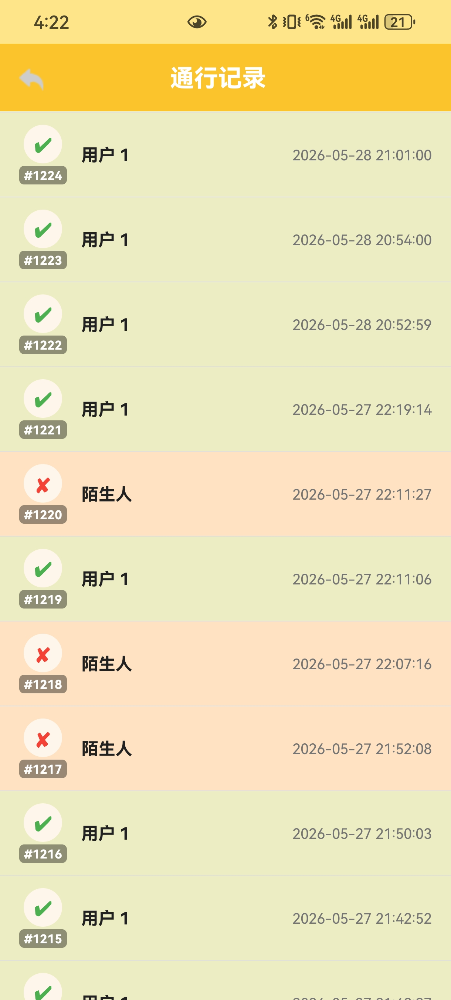
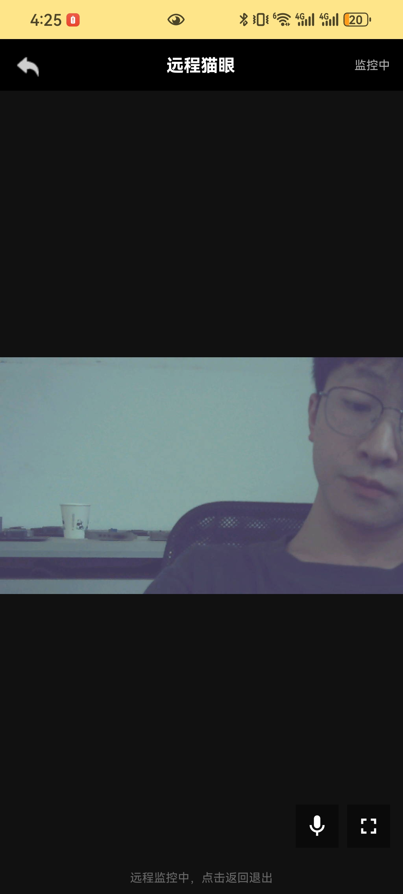
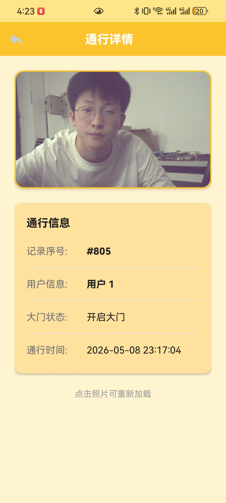
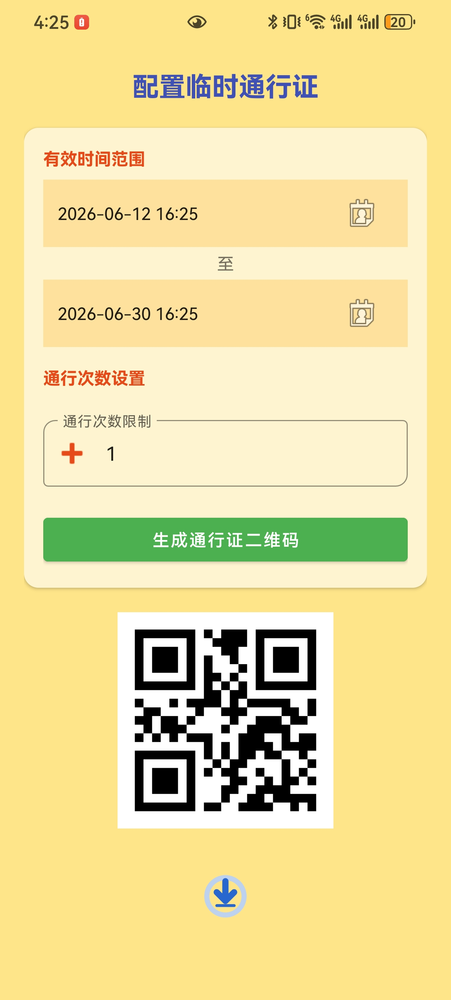

Android 智能门锁配套 App
MQTT 双向通信 · 远程视频监控 · WebSocket 语音对讲
项目概述
本 App 是 ESP32-P4 智能门锁的 Android 配套应用，基于 Eclipse Paho MQTT + OkHttp WebSocket + MJPEG 流解析，实现与智能门锁的实时双向通信、远程视频监控、语音对讲等功能。
我在项目中主要负责以下工作：
- MQTT 通信模块的设计与实现，包括单例管理、多回调机制、主题订阅
- MJPEG 视频流的状态机解析与实时显示
- WebSocket 语音对讲功能的开发（16kHz PCM 实时推流）
- 临时通行证 QR 码生成与管理系统
- MQTT+HTTP 桥接模式实现照片获取
三层通信架构
| 层级 | 协议 | 用途 | 特点 |
|---|---|---|---|
| 控制层 | MQTT | 门锁控制、通行证管理、成员管理 | 双向、实时、QoS 1 |
| 数据层 | HTTP REST | 访问日志、照片获取 | 请求-响应、可靠 |
| 媒体层 | MJPEG + WebSocket | 视频监控、语音对讲 | 流式、低延迟 |
App 功能模块
进入页面与登录
App 启动后进入登录界面，用户输入账号密码进行身份验证。系统支持记住密码功能，通过 SharedPreferences 持久化存储登录信息，下次启动时自动填充。

登录流程说明：
- 输入验证：检查用户名和密码是否为空，为空时显示错误提示
- 记住密码：勾选后将登录信息保存到 SharedPreferences，下次自动填充
- MQTT 连接：登录成功后自动建立 MQTT 连接，订阅相关主题
- 页面跳转：验证通过后跳转到主控制界面
MQTT 双向通信
MQTT 是整个 App 的核心通信协议，采用单例模式管理全局唯一的连接实例，支持多个 Activity 共享同一个连接，QoS 1 保证消息至少送达一次。
MQTT 主题设计
主题采用 sml/ 命名空间，按功能分层设计，便于管理和扩展：
| 主题 | 方向 | 用途 |
|---|---|---|
sml/pass/generate |
App → 设备 | 通行证生成请求 |
sml/pass/response |
设备 → App | 通行证响应结果 |
sml/control/command |
App → 设备 | 控制命令（开锁、监控等） |
sml/control/status |
设备 → App | 设备状态上报 |
sml/enroll/list |
设备 → App | 注册成员列表 |
sml/enroll/delete |
App → 设备 | 删除成员请求 |
多回调机制：为了支持多个 Activity 同时监听 MQTT 消息，我们设计了多回调列表机制。当消息到达时，系统会遍历所有注册的回调函数并依次调用，确保每个界面都能收到自己关心的消息。
数据库获取与成员管理
App 通过 MQTT 从 ESP32-P4 设备获取已注册的成员列表，包括成员的姓名、ID、注册时间等信息。用户可以查看成员详情、删除成员，所有操作通过 MQTT 实时同步到设备端。

成员管理功能：
- 列表展示：以 RecyclerView 展示所有已注册成员，支持下拉刷新
- 成员详情：点击可查看成员的详细信息和注册照片
- 删除成员：长按可删除成员，操作通过 MQTT 同步到设备
- 照片获取：采用 MQTT+HTTP 桥接模式，解决 NAT 穿透问题
远程猫眼功能
远程猫眼是 App 的核心功能之一，通过 HTTP 长连接接收设备端摄像头的 MJPEG 视频流，实现远程实时查看门外情况。采用自定义状态机解析帧边界，支持全屏横屏模式。

视频流工作原理：
- MQTT 触发：App 通过 MQTT 发送
monitor.start命令，通知设备开始推流 - HTTP 连接：App 建立 HTTP 长连接到设备的 MJPEG 流地址
- 状态机解析：使用三状态状态机（等待边界→等待头结束→读取帧数据）解析 MJPEG 流
- 帧解码显示：将 JPEG 帧解码为 Bitmap 并在 ImageView 上实时显示
- 停止推流：退出时发送
monitor.stop命令，断开 HTTP 连接
性能优化：
- 128KB 缓冲区：使用大缓冲区减少系统调用次数，提高解析效率
- 硬件解码：利用 Android 硬件加速解码 JPEG，降低 CPU 占用
- 全屏模式：支持横屏全屏查看，充分利用屏幕空间
查看详细记录
App 提供完整的访问日志查看功能，记录所有的门锁开启事件，包括时间、方式、用户信息等。用户可以按时间筛选、查看详情，方便追溯和管理。

日志功能特点：
- 时间排序：按时间倒序展示，最新的记录在最前面
- 多种筛选：支持按日期、开门方式（人脸/密码/远程/临时通行证）筛选
- 详情查看：点击可查看详细的开门记录，包括抓拍照片
- 照片加载：使用 Glide 库异步加载照片，支持缓存和占位图
临时通行证系统
用户可通过 App 生成临时通行证 QR 码，设置有效期和使用次数，访客扫码即可开门。这是为访客、快递员等临时人员设计的便捷开门方式。

通行证功能说明：
- 有效期设置：支持设置 1 小时、1 天、7 天、30 天等多种有效期
- 使用次数：支持设置单次使用或多次使用，满足不同场景需求
- QR 码生成：使用 ZXing 库生成高清晰度 QR 码，支持保存到相册
- MQTT 同步：通行证信息通过 MQTT 同步到设备，确保离线也能使用
MQTT+HTTP 桥接模式
照片获取采用MQTT 触发 + HTTP 获取的桥接模式，解决了 ESP32-P4 无法被 App 直接访问的 NAT 穿透问题。
桥接流程详解
- MQTT 触发：App 通过 MQTT 发送照片获取请求到设备
- 设备上传：ESP32-P4 收到请求后，将照片上传到 Flask 服务器
- MQTT 响应：设备上传完成后，通过 MQTT 回复照片 URL
- HTTP 获取：App 收到响应后，通过 HTTP GET 从 Flask 服务器获取照片
设计优势：
- 解决 NAT 穿透：不需要设备有公网 IP，通过云端服务器中转
- 可靠性高：MQTT 保证命令送达，HTTP 保证照片完整传输
- 扩展性好：可以轻松添加更多需要上传的资源类型
落地成果
技术栈
- 平台： Android (minSdk 24, targetSdk 36)
- 语言： Java 11
- 构建： Gradle Kotlin DSL
- MQTT： Eclipse Paho MQTT Client 1.2.5
- HTTP/WebSocket： OkHttp
- QR 码： ZXing Core 3.5.1
- 图片加载： Glide 4.16.0
- 配套硬件： ESP32-P4 Function EV Board